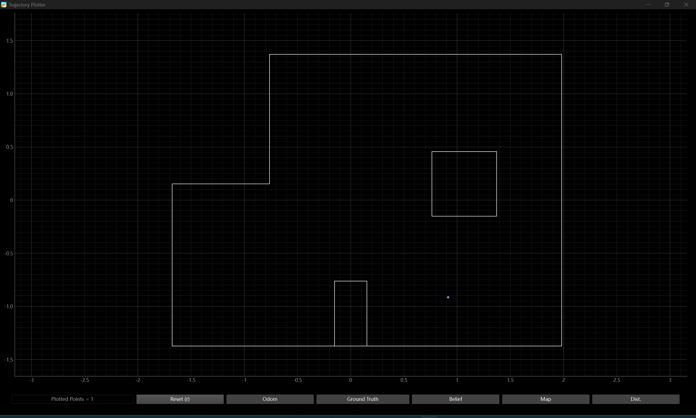

Objectives
Theoretically, this lab should be implemented based on the full Bayes Filter or at least the update step of the Bayes Filter. But after trying three weeks to solve some
kind of weird bugs that interfere my localization result, I incline to implement something new instead of sticking to the lab requirements.
Bug in Localization Part
The update step will result in 60cm error even if the ToF scans are overall accurate.
Here's the map collected from the bottom-right corner of the environment:


The data for map was saved in the format of bearing and range readings. But if I directly feed the data into the update step of the Bayes Filter, The result is:
 which is roughly 2 tiles away from the actual point. This bug is yet to be fixed even after talking to the TAs. Thus in this lab I will try realizing a different function using the car.
1 Design
My goal in this lab is to let the car follow the wall, and it decides when to take a turn as it is at the corner. To achieve stable speed, I utilize the distance PID controller to divide the whole route into
20cm segments. This can prevent the speed being too fast to avoid crashing. When it detects it is in the corner, it will decide which direction to turn according to the readings of the two ToF sensors (one on the front and the
other one on the left side).
When the car is supposed to take a turn, the rotation PID controller will be activated until a 90 / -90 degree turn is achieved.
The code is shown below. The car is set to follow the wall on the left side since this is where the other ToF sensor is mounted. It turns right only when the distance from the two sensors are both limited.
try:
while(True):
ble.send_command(CMD.GET_DS, "")
time.sleep(0.2)
s = ble.receive_string(ble.uuid['RX_STRING']).split()
s = np.array(s).astype('int')
print(s)
if s[1] > 200 and s[2] < 600 :
cmd = "forward"
elif s[1] > 200 and s[2] >= 600 :
cmd = "left"
elif s[1] <= 200 and s[2] < 600:
cmd = "right"
elif s[1] <= 200 and s[2] >= 600:
cmd = "left"
print(cmd)
if cmd == "forward":
# ble.send_command(CMD.MOVE_FB, str(minPWM))
ble.send_command(CMD.SET_MAX_PWM, "220") # 145
time.sleep(0.2)
ble.send_command(CMD.SET_TARGET_DIS, str(max(s[1] - 200, 120)))
time.sleep(0.2)
ble.send_command(CMD.PID_TOF_ON, "145")
time.sleep(2)
ble.send_command(CMD.PID_TOF_OFF, "")
time.sleep(0.2)
cmd = "none"
elif cmd == "left":
ble.send_command(CMD.SET_MAX_PWM, "165") # 145
ble.send_command(CMD.STOP, "")
ble.send_command(CMD.PID_ROT_ON, "")
ble.send_command(CMD.SET_TARGET_YAW, "0")
ble.send_command(CMD.SET_TARGET_YAW, "90")
time.sleep(2.5)
ble.send_command(CMD.PID_ROT_OFF, "")
cmd = "none"
elif cmd == "right":
ble.send_command(CMD.SET_MAX_PWM, "165") # 145
ble.send_command(CMD.STOP, "")
ble.send_command(CMD.PID_ROT_ON, "")
ble.send_command(CMD.SET_TARGET_YAW, "0")
ble.send_command(CMD.SET_TARGET_YAW, "-90")
time.sleep(2.5)
ble.send_command(CMD.PID_ROT_OFF, "")
cmd = "none"
elif cmd == "none":
pass
time.sleep(1)
except KeyboardInterrupt:
ble.send_command(CMD.STOP, "")
print("Exit program")
Before that, we should set appropriate PID parameters to the distance and rotation PID controllers.
ble.send_command(CMD.SET_CAL_FAC, "1.05")
ble.send_command(CMD.SET_MAX_PWM, "145") # 145
ble.send_command(CMD.SET_CAL_DT, "1.09") # 1.3752, 1.2117, 1.3126. 1.23967, 1.1664, 1.1958, 1.2434
Kp_R = 12.00
Ki_R = 8.5
Kd_R = 0.5
ble.send_command(CMD.SET_P_ROT, str(Kp_R)) # to be modified
ble.send_command(CMD.SET_I_ROT, str(Ki_R))
ble.send_command(CMD.SET_D_ROT, str(Kd_R))
Kp = 0.35
Ki = 0.015
Kd = 0.15
ble.send_command(CMD.SET_P, str(Kp)) # to be modified
ble.send_command(CMD.SET_I, str(Ki))
ble.send_command(CMD.SET_D, str(Kd))
2 Results
The car is tested in a \( 1.8m \times 1.5m \) environment. Please refer to the videos below.
From the video, the main idea of the design can be verified, but the car is not able to execute for a long enough duration. There are some problems that always happens but hard to debug, which might lead to the unreliability of the car: 1) the Artemis board will crash after consecutively running two rotation PID controllers; 2) the three sensors connected via the IIC port randomly fail to transmit the readings to the board, resulting in all zeros; 3) the IMU will randomly fail if it is touched by hand, meaning its readings are frozen to some value; 4) the messages or values sent via BLE may not take effect to change the global values in the Artemis board, to which its value is assigned, this happens especially when the BLE has transmitted several commands; 5) the Artemis board will randomly freeze for no reason. During labs 11~12, I have attended every open lab hour and most of the time was devoted to fixing bugs other than designing a fancy algorithms. I wish I could redo all the hardward from the beginning so that I can figure out which part goes wrong.
Actually I have tested the car to run the first three waypoints in the lab, but I did not record it and the line queueing for this lab never reached me. Here's the code for the first several waypoints.
# Use Distance and Orientation PID controllers.
cmdr.reset_plotter()
cmdr.plot_bel(-4*0.302, -3*0.302)
# (-4, -3, 45deg) -> (-2, -1, 0deg)
# get the tof reading
ble.send_command(CMD.GET_DS, "")
s = ble.receive_string(ble.uuid['RX_STRING']).split()
DS1 = float(s[1])
print("Distance Sensor 1: {}".format(DS1))
# calculate the distance between waypoints
distance = np.sqrt(np.sum((np.array([-4, -3]) - np.array([-2, -1])) ** 2)) * 0.302 * 1000
print("Distance between two points: {}".format(distance))
# go straight line using distance PID
ble.send_command(CMD.SET_MAX_PWM, "80")
ble.send_command(CMD.SET_TARGET_DIS, str(DS1 - distance))
ble.send_command(CMD.PID_TOF_ON, "80")
print("Set goal distance to {}".format(DS1 - distance))
time.sleep(5.5)
ble.send_command(CMD.PID_TOF_OFF, "")
# turn using rotational PID
ble.send_command(CMD.SET_MAX_PWM, "145")
ble.send_command(CMD.PID_ROT_ON, "")
ble.send_command(CMD.SET_TARGET_YAW, "-45")
print("Set goal yaw to {}".format(-45))
time.sleep(3)
ble.send_command(CMD.PID_ROT_OFF, "")
cmdr.plot_bel(-2 * 0.304, -1 * 0.304)
time.sleep(1)
# (-2, -1, 0deg) -> (1, -1, -75deg)
# get the tof reading
ble.send_command(CMD.GET_DS, "")
s = ble.receive_string(ble.uuid['RX_STRING']).split()
DS1 = float(s[1])
print("Distance Sensor 1: {}".format(DS1))
# calculate the distance between waypoints
distance = np.sqrt(np.sum((np.array([-2, -1]) - np.array([1, -1])) ** 2)) * 0.302 * 1000
print("Distance between two points: {}".format(distance))
# go straight line using distance PID
ble.send_command(CMD.SET_MAX_PWM, "80")
ble.send_command(CMD.SET_TARGET_DIS, str(DS1 - distance))
ble.send_command(CMD.PID_TOF_ON, "80")
print("Set goal distance to {}".format(DS1 - distance))
time.sleep(2)
ble.send_command(CMD.PID_TOF_OFF, "")
# turn using rotational PID
ble.send_command(CMD.SET_MAX_PWM, "145")
targetYaw = -np.arctan(4) * 180 / np.pi
ble.send_command(CMD.PID_ROT_ON, "")
ble.send_command(CMD.SET_TARGET_YAW, str(targetYaw))
print("Set goal yaw to {}".format(targetYaw))
time.sleep(2)
ble.send_command(CMD.PID_ROT_OFF, "")
cmdr.plot_bel(1 * 0.304, -1 * 0.304)
time.sleep(1)
# (1, -1) -> (2, -3, 0deg)
ble.send_command(CMD.GET_DS, "")
s = ble.receive_string(ble.uuid['RX_STRING']).split()
DS1 = float(s[1])
print("Distance Sensor 1: {}".format(DS1))
# calculate the distance between waypoints
distance = np.sqrt(np.sum((np.array([2, -3]) - np.array([1, -1])) ** 2)) * 0.302 * 1000
print("Distance between two points: {}".format(distance))
# go straight line using distance PID
ble.send_command(CMD.SET_MAX_PWM, "80")
ble.send_command(CMD.SET_TARGET_DIS, str(DS1 - distance))
ble.send_command(CMD.PID_TOF_ON, "80")
print("Set goal distance to {}".format(DS1 - distance))
time.sleep(2)
ble.send_command(CMD.PID_TOF_OFF, "")
# turn using rotational PID
ble.send_command(CMD.SET_MAX_PWM, "145")
targetYaw = np.arctan(4) * 180 / np.pi
ble.send_command(CMD.PID_ROT_ON, "")
ble.send_command(CMD.SET_TARGET_YAW, str(targetYaw))
print("Set goal yaw to {}".format(targetYaw))
time.sleep(2)
ble.send_command(CMD.PID_ROT_OFF, "")
cmdr.plot_bel(2 * 0.304, -3 * 0.304)
time.sleep(1)
Acknowledgement
Many thanks to our instructor Dr. Jonathan Jaramillo and those helpful TAs, and also to Prof. Kirstin Petersen who established this course. I have learned how to build a fast-operating robot from scratch and it is my first time
implementing a PID controller, a Kalman Filter and a Gaussian Filter.
Despite what I have learned, I am not very satisfied with the robot I made. The robot is supposed to be "fast", but I don't think I have successfully achieved this goal. There're a lot of bugs I may not be able to solve before the deadline, many apologies if you're grading my report. But
I have concluded something for myself in case I have other robots to build in the future:
1. Always think ahead. Once the wires are soldered, it is hard to make adjustments. It is necessary to think in the system level to prevent bugs in the hardware level.
2. Code according to the hardware capacity. I thought I did a great job in creating sophisticated condition statements in the Arduino, thinking in a python way. But the Artemis
board may crush if the code is long, also the real-time performance will be damaged. For example, I was using the time difference of two consecutive entries to the rotation PID controller to
calculate the dt for yaw based on GYRO. But once the code gets complex, there's around 30% error of the dt (calculation results in dt = 0.02s, but it should be 1.3 times larger). I might be a good programmer for
better embedded systems, but the mindset is not the same for an arduino chip.
3. Open to a restart. If I redo everything in my car earlier in a way I thought was better, I might have avoided those sunk costs I have paid. The fact is I have spent so much time but the bugs are still rolling bigger.
4. Learn from others. Be open to the ideas with good results, which saves you time for better outcome. You may figure out a better way in the end, but for how long?
5. Secure every step. Otherwise the bugs will be the rolling snowball, and you don't even know which to begin with.
THE END